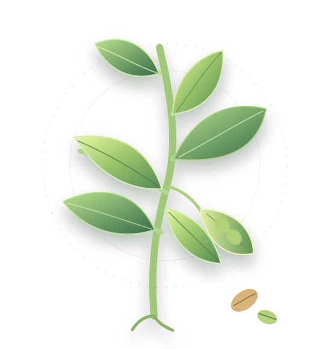

Leguminosas
Producción, fisiología, nutrición vegetal y oportunidades de valorización en sistemas alimentarios.
Producción & conocimientoConectamos ciencia, biodiversidad e innovación para impulsar el conocimiento sobre leguminosas y cultivos ancestrales y contribuir a sistemas alimentarios más sostenibles.

Somos un espacio académico dedicado al estudio de leguminosas y cultivos ancestrales. Integramos conocimiento agronómico, evaluación experimental y desarrollo de nuevas oportunidades para la producción y valorización de alimentos.
Buscamos conectar la investigación universitaria con necesidades reales de productores, instituciones y comunidades.
Trabajemos juntosExploramos el potencial de especies y sistemas productivos mediante ciencia aplicada y enfoques interdisciplinarios.
Producción, fisiología, nutrición vegetal y oportunidades de valorización en sistemas alimentarios.
Producción & conocimientoEstudio de especies tradicionales, diversidad de usos y alternativas de innovación agroalimentaria.
Diversidad & patrimonioInvestigación orientada al desarrollo, caracterización y aprovechamiento de productos derivados de cultivos.
Calidad & valorizaciónEvaluación de prácticas y generación de evidencia para sistemas productivos más eficientes y resilientes.
Datos & sostenibilidadUna selección de ámbitos de trabajo. Reemplaza estas fichas por los nombres oficiales y resultados verificables de cada proyecto.
Estudio y valorización de hojas, granos y alternativas de procesamiento.
Evaluación de biomasa, acumulación de nutrientes y requerimientos de especies cultivadas.
Generación de evidencia para fortalecer producción, consumo y colaboración.
La investigación avanza cuando distintas experiencias y disciplinas se encuentran.
Un lugar para reunir publicaciones científicas, informes, recursos técnicos y noticias del laboratorio.
Añade aquí referencias reales, enlaces DOI, documentos descargables o noticias verificadas del equipo.
¿Te interesa colaborar, desarrollar un proyecto o conocer más sobre nuestras líneas de investigación?
Escríbenos Antes de publicar, reemplaza CONTACTO@EJEMPLO.CL en el archivo index.html por el correo oficial del laboratorio.